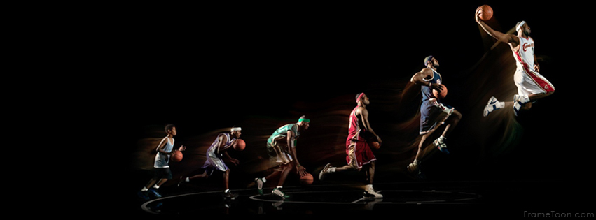
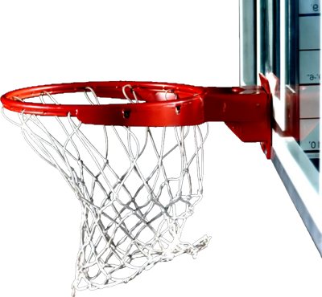

SPORTS ANALYTICS
There is a lot of value for game analytics today, but there will be even more value in future years as more & more teams adapt it. Sports analytics will continue to evolve. They will undoubtedly become more heavily relied on analytics. Today, every major professional sports team either has an analytics department or an analytics expert on staff. Gone are the days of strictly examining on-the-field metrics to understand and optimize behavior and performance. Analytics are the present and future of professional sports. Any team that does not apply them to the fullest is at a competitive disadvantage. Analytics have changed the way sports are played and player performance is measured.
We are experts in breaking down game-tape to expose advance data and analytics for our client in Basketball, American football, Volleyball, & Lacrosse breaking down hundreds of games every day.The data collected provides a plethora of innovative statistics based on speed, distance, player separation and ball possession. Some examples include how fast a player moves, how far he traveled during a game, how many times he touched the ball, how many passes he made, how many rebounding opportunities he had, and much more.
Basketball


Basketball game breakdown includes
- Made Shots - Dunks, Jumpers, Layups, 3-Pointers, Tip in
- Missed Shots - Dunks, Jumpers, Layups, 3-Pointers, Tip in
- Rebounds - Defensive, Offensive
- Fouls - Defensive, Loose Ball, Offensive, Shooting, Technical
- Free Throws - Made, Missed
- Other - Out of Bounds, Violations, Deflections, Steals, 2nd Chances, Jump ball
- Inbounds - Sideline, Baseline
- Setups - Play Drive Left, Drive Right, Fast break, Half court